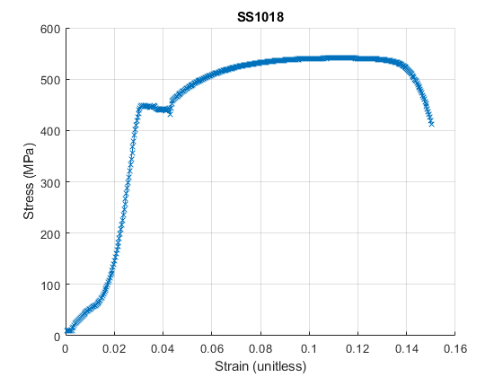

Solids Lab: Tensile Tests
Trevor Burgoyne 7 Dec 2022 AEM 4602W, Lab Group 3Bi
Contents
Conversions
mm2in = 0.0393701; % in/mm psi2mpa = 0.00689476; % MPa/psi mpa2gpa = .001; % GPa/MPa volts2lbs = 5620/10; % lbs/volt tensile test machine conversion volts2in = 2/10; % in/volt tensile test machine conversion
Extensometer Calibration
d = 0.1*mm2in; % mm -> in, micrometer distance % d = 0.1; V = [0.953, 0.956, 0.955]; % Volts, extensometer reading at d V_avg = mean(V); ext_volts2in = d/V_avg; % in/Volt, extensometer conversion
Metal Properties
l = 2.7575; % in, gage length % Aluminim 6061 AL6061 = struct(); w = [.1955, .193, .193]; % in, sample width t = [.118, .1115, .1155]; % in, sample thickness AL6061.w = mean(w); % in AL6061.t = mean(t); % in AL6061.a = AL6061.w*AL6061.t; % in^2, cross-sectional area AL6061.l = l; % in, gage length wb = [.149, .1615]; % in, sample width at break tb = [.082, .0885]; % in, sample thickness at break AL6061.wb = mean(wb); % in AL6061.tb = mean(tb); % in AL6061.ab = AL6061.wb*AL6061.tb; % in^2, cross-sectional area of break AL6061.a_red = (1 - AL6061.ab/AL6061.a)*100; % percent reduction of area at failure AL6061.true_strain = log(AL6061.a / AL6061.ab); % unitless, true strain at failure, assumes zero volume change AL6061.fmax = 1118.2; % lb AL6061.xmax = 0.021; % in AL6061.fb = 920.4; % lb AL6061.xb = 0.024; % in % Steel 304 SS304 = struct(); w = [.1935, .1945, .1935]; % in, sample width t = [.1135, .118, .1135]; % in, sample thickness SS304.w = mean(w); % in SS304.t = mean(t); % in SS304.a = SS304.w*SS304.t; % in^2, cross-sectional area SS304.l = l; % in, gage length wb = 3.37*mm2in; % in, sample width at break tb = 1.95*mm2in; % mm->in, sample thickness at break SS304.wb = mean(wb); % in SS304.tb = mean(tb); % in SS304.ab = SS304.wb*SS304.tb; % in^2, cross-sectional area of break SS304.a_red = (1 - SS304.ab/SS304.a)*100; % percent reduction of area at failure SS304.true_strain = log(SS304.a / SS304.ab); % unitless, true strain at failure, assumes zero volume change SS304.fmax = 1750.7; % lb % SS304.xmax = 0.021; % in % SS304.fb = 1227.9; % lb SS304.xb = 0.029; % in % Steel 1018 SS1018 = struct(); w = [.193, .192, .1945]; % in, sample width t = [.1135, .115, .118]; % in, sample thickness SS1018.w = mean(w); % in SS1018.t = mean(t); % in SS1018.a = SS1018.w*SS1018.t; % in^2, cross-sectional area SS1018.l = l; % in, gage length wb = [.1205, .123]; % in, sample width at break tb = [.083, .083]; % in, sample thickness at break SS1018.wb = mean(wb); % in SS1018.tb = mean(tb); % in SS1018.ab = SS1018.wb*SS1018.tb; % in^2, cross-sectional area of break SS1018.a_red = (1 - SS1018.ab/SS1018.a)*100; % percent reduction of area at failure SS1018.true_strain = log(SS1018.a / SS1018.ab); % unitless, true strain at failure, assumes zero volume change SS1018.fmax = 1750.7; % lb SS1018.xmax = 0.021; % in SS1018.fb = 1227.9; % lb SS1018.xb = 0.029; % in
AL6061 Test
time, Chan101 (Volts, load cell), time, Chan102 (Volts, crosshead), time, Chan103 (Volts, extensometer)
data = readtable('dataALTest1.csv'); idx = find(data.Chan103 == 0.345908) - 1; % idx where extensometer was removed end_idxs = find(data.Chan101 < 0.03); % idx where sample broke end_idx = end_idxs(1) - 1; AL6061.volts2lbs = AL6061.fmax / max(data.Chan101); % lbs/volt using recorded max force AL6061.volts2in = AL6061.xb / data.Chan102(end_idx); % in/volt using recorded max displacement AL6061.stress = (data.Chan101(2:end_idx)*AL6061.volts2lbs / AL6061.a)*psi2mpa; % MPa, engineering stress AL6061.strain = data.Chan103(2:idx)*ext_volts2in / AL6061.w; % unitless, engineering strain eu = AL6061.strain(end); % Last value of extensometer strain cross_eu = data.Chan102(idx); % Volts, value of crosshead reading when extensometer was removed AL6061.strain = [AL6061.strain', (data.Chan102(idx+1:end_idx)-cross_eu)'*AL6061.volts2in / AL6061.w + eu]'; % Use crosshead data after extensometer was removed AL6061.tough = trapz(AL6061.strain, AL6061.stress); % MPa, toughness AL6061.strength = AL6061.stress(idx); % MPa, ultimate strength (where necking starts) range = 20:100; % Idx range for E calculation AL6061.E = mean(diff(AL6061.stress(range))./diff(AL6061.strain(range))); % MPa, Young's Modulus % P = polyfit(AL6061.strain(range),AL6061.stress(range),1); % AL6061.E = P(1) test = AL6061.stress ./ (AL6061.strain - .002); % Slope of .2% offset line at each point idxs = find(test >= AL6061.E); % Find which best matches E AL6061.yield = AL6061.stress(idxs(1)) % MPa, yield stress (.2% offset)
Warning: Column headers from the file were modified to make them valid MATLAB
identifiers before creating variable names for the table. The original column
headers are saved in the VariableDescriptions property.
Set 'VariableNamingRule' to 'preserve' to use the original column headers as
table variable names.
AL6061 =
struct with fields:
w: 0.1938
t: 0.1150
a: 0.0223
l: 2.7575
wb: 0.1552
tb: 0.0852
ab: 0.0132
a_red: 40.6255
true_strain: 0.5213
fmax: 1.1182e+03
xmax: 0.0210
fb: 920.4000
xb: 0.0240
volts2lbs: 688.4451
volts2in: 0.0082
stress: [379×1 double]
strain: [379×1 double]
tough: 23.0011
strength: 344.9134
E: 7.6436e+04
yield: 265.5754
Plot
figure() hold on % plot(AL6061.strain(1:idx), AL6061.stress(1:idx), '-x') plot(AL6061.strain, AL6061.stress, '-x') % range = linspace(0,0.005,100); % plot(range, (AL6061.E/mpa2gpa)*range + .002); xlabel('Strain (unitless)'); ylabel('Stress (MPa)'); title('AL6061'); grid on
SS304 Test
time, Chan101 (Volts, load cell), time, Chan102 (Volts, crosshead), time, Chan103 (Volts, extensometer)
data = readtable('dataSS304.csv'); idx = find(data.Chan103 == 1.94125) - 1; % idx where extensometer was removed end_idxs = find(data.Chan101 < 0.001); % idx where sample broke end_idx = end_idxs(1) - 1; SS304.fmax = 1500; % lb SS304.xb = 0.029; % in SS304.volts2lbs = SS304.fmax / max(data.Chan101); % lbs/volt using recorded max force SS304.volts2in = SS304.xb / data.Chan102(end_idx); % in/volt using recorded max displacement % SS304.volts2lbs = volts2lbs; % SS304.volts2in = volts2in; SS304.stress = (data.Chan101(2:end_idx)*SS304.volts2lbs / SS304.a)*psi2mpa; % MPa, engineering stress % SS304.strain = data.Chan103(2:idx)*ext_volts2in / SS304.w; % unitless, engineering strain SS304.strain = data.Chan103(2:idx)*.05*volts2in / SS304.w; % unitless, engineering strain eu = SS304.strain(end); % Last value of extensometer strain cross_eu = data.Chan102(idx); % Volts, value of crosshead reading when extensometer was removed SS304.strain = [SS304.strain', (data.Chan102(idx+1:end_idx)-cross_eu)'*SS304.volts2in / SS304.w + eu]'; % Use crosshead data after extensometer was removed % Correct large strain offset offset_idx = 151; % Idx where extensometer reading jumps way down offset = SS304.strain(offset_idx-1) - SS304.strain(offset_idx); SS304.strain(offset_idx:end) = SS304.strain(offset_idx:end) + offset; SS304.tough = trapz(SS304.strain, SS304.stress); % MPa, toughness SS304.strength = SS304.stress(idx); % MPa, ultimate strength (where necking starts) range = 20:100; % Idx range for E calculation % SS304.E = mean(diff(SS304.stress(range))./diff(SS304.strain(range))); % MPa, Young's Modulus P = polyfit(SS304.strain(range),SS304.stress(range),1); SS304.E = P(1); test = SS304.stress ./ (SS304.strain - .002); % Slope of .2% offset line at each point idxs = find(test >= SS304.E); % Find which best matches E SS304.yield = SS304.stress(idxs(1)) % MPa, yield stress (.2% offset)
Warning: Column headers from the file were modified to make them valid MATLAB
identifiers before creating variable names for the table. The original column
headers are saved in the VariableDescriptions property.
Set 'VariableNamingRule' to 'preserve' to use the original column headers as
table variable names.
SS304 =
struct with fields:
w: 0.1938
t: 0.1150
a: 0.0223
l: 2.7575
wb: 0.1327
tb: 0.0768
ab: 0.0102
a_red: 54.3047
true_strain: 0.7832
fmax: 1500
xb: 0.0290
volts2lbs: 595.6612
volts2in: 0.0077
stress: [503×1 double]
strain: [503×1 double]
tough: 81.7386
strength: 463.4645
E: 1.9831e+05
yield: 367.4663
Plot
figure() hold on plot(SS304.strain(1:end), SS304.stress(1:end), '-x') xlabel('Strain (unitless)'); ylabel('Stress (MPa)'); title('SS304'); grid on
SS1018 Test (No extensometer)
time, Chan101 (Volts, load cell), time, Chan102 (Volts, crosshead), time, Chan103 (Volts, extensometer)
data = readtable('dataSS1018.csv'); end_idxs = find(data.Chan101 < 0.03); % idx where sample broke end_idx = end_idxs(1) - 1; SS1018.volts2lbs = SS1018.fmax / max(data.Chan101); % lbs/volt using recorded max force SS1018.volts2in = SS1018.xb / data.Chan102(end_idx); % in/volt using recorded max displacement SS1018.stress = (data.Chan101(2:end_idx)*SS1018.volts2lbs / SS1018.a)*psi2mpa; % MPa, engineering stress SS1018.strain = data.Chan102(2:end_idx)*SS1018.volts2in / SS1018.l; % unitless, engineering strain SS1018.tough = trapz(SS1018.strain*(SS1018.l/SS1018.w), SS1018.stress*(SS1018.l/SS1018.w)); % MPa, toughness SS1018.strength = SS1018.stress(idx); % MPa, ultimate strength (where necking starts) range = 20:100; % Idx range for E calculation % SS1018.E = mean(diff(SS1018.stress(range))./diff(SS1018.strain(range))); % MPa, Young's Modulus P = polyfit(SS1018.strain(range),SS1018.stress(range),1); SS1018.E = P(1); test = SS1018.stress ./ (SS1018.strain - .002); % Slope of .2% offset line at each point idxs = find(test >= SS1018.E); % Find which best matches E SS1018.yield = SS1018.stress(idxs(1)) % MPa, yield stress (.2% offset) % Poisson ratio
Warning: Column headers from the file were modified to make them valid MATLAB
identifiers before creating variable names for the table. The original column
headers are saved in the VariableDescriptions property.
Set 'VariableNamingRule' to 'preserve' to use the original column headers as
table variable names.
SS1018 =
struct with fields:
w: 0.1932
t: 0.1155
a: 0.0223
l: 2.7575
wb: 0.1217
tb: 0.0830
ab: 0.0101
a_red: 54.7068
true_strain: 0.7920
fmax: 1.7507e+03
xmax: 0.0210
fb: 1.2279e+03
xb: 0.0290
volts2lbs: 689.3470
volts2in: 0.0082
stress: [466×1 double]
strain: [466×1 double]
tough: 934.7576
strength: 538.8684
E: 2.3737e+05
yield: 400.7667
Plot
figure() hold on plot(SS1018.strain*(SS1018.l/SS1018.w), SS1018.stress, '-x') xlabel('Strain (unitless)'); ylabel('Stress (MPa)'); title('SS1018'); grid on
SS1018 DIC Data (Before Yielding)
times = [30, 32, 40, 50, 60, 70, 80, 90, 100];
SS1018.exx = [-.108, -.214, -.045, -.352, -.121, -.084, -.035, 0.099, -.231]; SS1018.eyy = [.101, .187, -.137, -.075, .314, .123, .256, -.011, .357]; % SS1018.v_elastic = mean(diff(-SS1018.exx)./diff(SS1018.eyy)); P = polyfit(SS1018.eyy,-SS1018.exx,1); SS1018.v_elastic = P(1); figure() plot(SS1018.eyy, -SS1018.exx); grid on; ylabel('-e_{xx} (%)');xlabel('e_{yy} (%)');title('-e_{xx} vs e_{yy} (elastic)')
SS1018 DIC Data (After Yielding)
times = [100, 130, 160, 190, 220, 250, 280, 310, 340, 370, 400];
SS1018.exx = [-.231, -1.210, -1.939, -2.991, -3.233, -4.350, -5.174, -6.014, -6.961, -8.099, -9.607]; SS1018.eyy = [0.357, 2.650, 4.076, 5.834, 7.409, 9.352, 11.628, 13.831, 16.020, 18.689, 22.989]; % SS1018.v_plastic = mean(diff(-SS1018.exx)./diff(SS1018.eyy)); P = polyfit(SS1018.eyy,-SS1018.exx,1); SS1018.v_plastic = P(1); figure() plot(SS1018.eyy, -SS1018.exx); grid on; ylabel('-e_{xx} (%)');xlabel('e_{yy} (%)');title('-e_{xx} vs e_{yy} (plastic)')